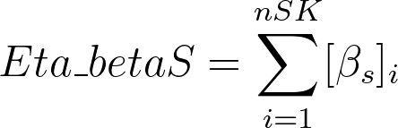
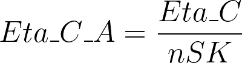
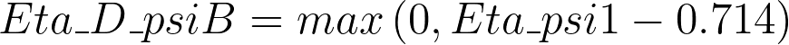

5.11 ETA indices
ETA indices comprise a set of two generation descriptors1,2,3 defining chemical features at the atomic as well as molecular level.
The ETA indices have been defined using a few graph theoretic parameters as well as some electronic indices to describe the bonding pattern, unsaturation, electronegativity and hydrogen-bonding related information.
The definition of the ETA indices is based on five atom parameters: the core count (α), the electronegativity count (ε), the hydrogen-bonding propensity (ψ), the Valence Electron Mobile (VEM) count (β) and the VEM vertex count (γ).
The ETA core count is formally defined as: where PN stands for period number, Z is the atomic number and Zv is the valence electron number.
The ETA electronegativity count is defined as follows: where ε is characterised by a significant correlation with Pauling’s electronegativity scale1.
The ETA hydrogen bonding propensity is defined as follows:
The VEM count β for a non-hydrogen vertex can be defined as: βs is defined as: and βns is defined as: where the parameters σ and π correspond respectively to the number of sigma and pi bonds in the connected hydrogen suppressed molecular graph and δ represents a correction factor having a value of 0.5 per atom with loan pair of electrons capable of making resonance with an aromatic ring (e.g. nitrogen of aniline, oxygen of phenol etc.). The parameter x has value equal to 0.5 for sigma bonds between two atoms of similar electronegativity (Δε ≤ 0 3), and for a sigma bond between two atoms of different electronegativity (Δε >0.3), is considered to be 0.75. The parameter y is assigned depending on the type of double bonds. For a π bond between two atoms of similar electronegativity (Δε ≤ 0.3), the value of y is 1. For a π bond between two atoms of different electronegativity (Δε > 0.3) or for conjugated (non-aromatic) π system, y is considered to be 1.5. For an aromatic π system, the value of the y parameter is 2.
The VEM vertex count is defined as:
where α is the ETA core count and β is the VEM count of the considered atom.
Here’s the list of the ETA indices included in alvaDesc:
| ID | Descriptor name | Formula |
|---|---|---|
| 1 | Eta_alpha - eta core count | |
| 2 | Eta_alpha_A - eta average core count | |
| 3 | Eta_epsi - eta electronegativity measure | |
| 4 | Eta_epsi_A - eta average electronegativity measure | |
| 5 | Eta_betaS - eta sigma VEM count |  |
| 6 | Eta_betaS_A - eta sigma average VEM count | |
| 7 | Eta_betaP - eta pi and lone pair VEM count | |
| 8 | Eta_betaP_A - eta pi and lone pair average VEM count | |
| 9 | Eta_beta - eta VEM count | |
| 10 | Eta_beta_A - eta average VEM count | |
| 11 | Eta_C - eta composite index | |
| 12 | Eta_C_A - eta average composite index |  |
| 13 | Eta_L - eta local composite index | |
| 14 | Eta_L_A - eta average local composite index | |
| 15 | Eta_R - eta composite index for reference alkane | |
| 16 | Eta_F - eta functionality index | |
| 17 | Eta_F_A - eta average functionality index |  |
| 18 | Eta_LR - eta local composite index for reference alkane | |
| 19 | Eta_FL - eta local functionality index |  |
| 20 | Eta_FL_A - eta average local functionality index | |
| 21 | Eta_B - eta branching index | |
| 22 | Eta_B_A - eta average branching index | |
| 23 | Eta_sh_p - eta p shape index | |
| 24 | Eta_sh_y - eta y shape index | |
| 25 | Eta_sh_x - eta x shape index | |
| 26 | Eta_D_AlphaA - eta delta alpha a index | |
| 27 | Eta_D_AlphaB - eta delta alpha b index | |
| 28 | Eta_epsi_2 - eta electronegativity measure 2 | |
| 29 | Eta_epsi_3 - eta electronegativity measure 3 | |
| 30 | Eta_epsi_4 - eta electronegativity measure 4 | |
| 31 | Eta_epsi_5 - eta electronegativity measure 5 | |
| 32 | Eta_D_epsiA - eta measure of unsaturation and electronegative atom count | |
| 33 | Eta_D_epsiB - eta measure of unsaturation | |
| 34 | Eta_D_epsiC - eta measure of electronegativity | |
| 35 | Eta_D_epsiD - eta measure of hydrogen bond donor atoms | |
| 36 | Eta_psi1 - eta measure of hydrogen bonding propensity and/or polar surface area | |
| 37 | Eta_D_psiA - eta measure of hydrogen bonding propensity |  |
| 38 | Eta_D_psiB - eta measure of hydrogen bonding propensity |  |
| 39 | Eta_D_beta - eta measure of electronic features | |
| 40 | Eta_D_beta_A - eta average measure of electronic features |
Some notes on the notation used:
- the subscript R indicates that the considered structure is the structure of the reference alkane, e.g. as in the calculation of the eta composite index for reference alkane (Eta_R). The reference alkane refers to the molecular graph of the original structure where all the heteroatoms are replaced with carbon and multiple bonds are replaced with single bonds
- NR indicates the total number of atoms including hydrogen in the connected molecular graph of the reference alkane
- the subscript SS indicates that the considered structure is the saturated carbon skeleton, e.g. as in the calculation of the eta electronegativity measure 4 (Eta_epsi_4). The saturated carbon skeleton refers to the molecular graph of the original structure where all carbon-carbon multiple bonds are considered as single bond
- NSS indicates the total number of atoms including hydrogen in the connected molecular graph of the saturated carbon skeleton
- aij indicates the element at position i,j of the adjacency matrix; aij is equal to 1 if the atoms i and j are connected, zero otherwise
- Eta_B is zero for molecules with nSK less than 3.
-
Roy, K., & Ghosh, G. (2003). Introduction of extended topochemical atom (ETA) indices in the valence electron mobile (VEM) environment as tools for QSAR/QSPR studies. Internet Electronic Journal of Molecular Design, 2, 599–620. ↩︎
-
Roy, K., & Das, R. N. (2011). On some novel extended topochemical atom (ETA) parameters for effective encoding of chemical information and modelling of fundamental physicochemical properties. SAR and QSAR in Environmental Research, 22(5–6), 451–472. ↩︎
-
Roy, K., & Das, R. N. (2015). The “ETA” Indices in QSAR/QSPR/QSTR Research. In K. Roy (Ed.), Quantitative Structure-Activity Relationships in Drug Design, Predictive Toxicology, and Risk Assessment (Vol. i, pp. 46–83). Medical Information Science Reference. ↩︎